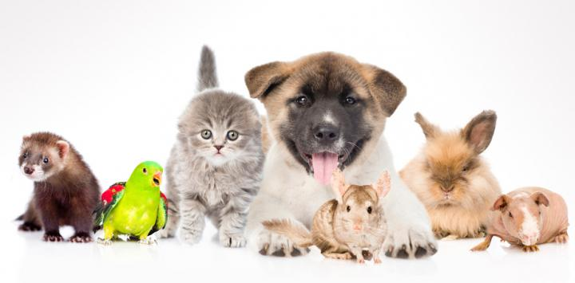
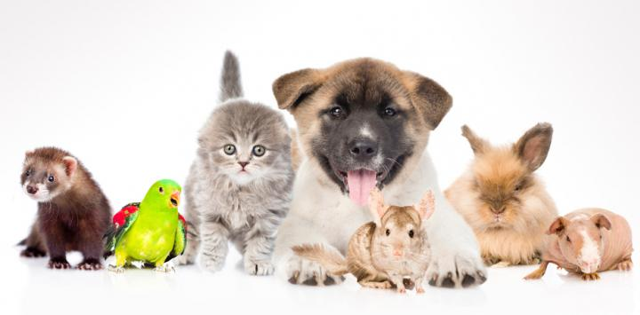

Nuske Home es el nuevo juego de mascotas para la Nintendo Switch
¿Cansado de que tus padres no te dejen tener una mascota? ¡No sufras más porque llegan a tu consola las mascotas virtuales! Adéntrate en una nueva aventura junto con tus mascotas, con el videojuego de NintendoSwitch NuskeHome.
 

¡Pon una mascota en tu Nintendo Switch! Escoge un animal entre una gran variedad de las razas más queridas y cuídalo usando la pantalla táctil y el micrófono. Acarícialo y juega con más de 100 objetos como pelotas de tenis, freesbees, bolas de algodón, acuarios de lujo y hasta ropa, y adiéstralo con tus propias órdenes por voz.Entrena a tus animales y compite en concursos de obediencia y de agilidad. Si ganas estos concursos conseguirás dinero para comprar cosas para tus amigos, o más mascotas para que no estén solos. Pasea a los perritos por el barrio para conocer a los perros de tus vecinos, o interactúa con tus amigos que tengan Nuske Home con el innovador Modo ladrido que se comunica con otros Nuske Home cercanos cuando tu Switch está en modo de ahorro de energía. Nuke Home está disponible en dos versiones, cada una de las cuales contiene una selección de 3 perros y gatos distintas disponibles desde el principio. Si eres un buen amo y/o te reúnes con los NuskeHome de tus amigos en el Modo ladrido, podrás obtener más mascotas, ¡hasta un total de 16 mascotas distintos!
NuskeHome nace como la primera iniciativa del Team Slch en el mundo de los videojuegos. Nos decidimos a hacer un juego sobre mascotas, porque todos de pequeños no pudimos tener una y no queremos que esto les ocurra a más niños, por lo que pensamos, que si no la podemos tener físicamente ¿por qué no tenerla en un mundo virtual? Esta pregunta fue la clave que nos llevó a embarcarnos en este proyecto. De esta manera tratamos de simular lo que sería tener una mascota, aunque sea dentro de una consola. Una vez decidido esto pensamos que porque quedarnos solo con una mascota pudiendo tener todas las que queramos y así nace el proyecto NuskeHome.
Contribuciones:
5 euros: Agradecimiento en el juego
40 euros: Agradecimiento en el juego y envío del juego a tu domicilio. Obtendrás el juego en tu domicilio una semana después de hacer tu contribución.
80 euros: Agradecimiento en el juego, envío del juego a tu domicilio con edición especial que incluye un libro de arte, un pin, y numerosos objetos exclusivos dentro del propio juego. Obtendrás tus recompensas por ayudarnos en tu domicilio una semana después de hacer tu contribución.
100 euros: Agradecimiento en el juego, envío del juego a tu domicilio con edición especial que incluye un libro de arte, un pin, y numerosos objetos exclusivos dentro del propio juego. Además contarás con una prenda con el logotipo de tu empresa dentro del juego. Obtendrás tus recompensas por ayudarnos en tu domicilio una semana después de hacer tu contribución.
Objetivos:
Primer Objetivo: Financiación completa del juego. Para lograr este objetivo necesitamos un total de 40.000 €
Segundo Objetivo: La implementación de razas adicionales en un nuevo parche. Para lograr este objetivo necesitamos un total de 43.000 €
Tercer Objetivo: Conseguir llevar el juego a diferentes plataformas. Para lograr este objetivo necesitamos un total de 55.000 €.
Equipo de Desarrollo:

Raquel Mijarra es la directora del proyecto. Raquel se encarga de que todos hagamos bien nuestro trabajo y todo esté en orden. Además se encarga de la publicidad del juego y de negocios con los patrocinadores.
Javier Duran es el director técnico. Javier se encarga de la programación del juego y de las herramientas y middleware.
Adrián Mira es el director creativo. Adrián se encarga de el concept art de los animales, su modelado 2D y 3D, de la animación y del diseño de interfaz.
Roberto Alegre es el director de diseño. Roberto se encarga del diseño de niveles y del guion del juego.
La realización de la práctica se ha realizado conjuntamente, subdividiendo las distintas partes del trabajo entre los participantes. Primero hicimos un diseño de como sería el visionado de cada página y después cada uno realizó la página correspondiente al animal que le tocase, buscando tanto la información como las imágenes. Todo el proceso de la página se ha hecho conjuntamente en llamada de discord debido a la situación actual.